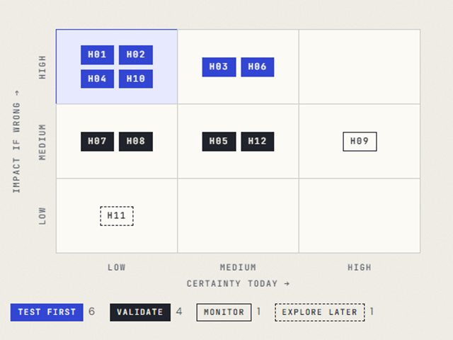
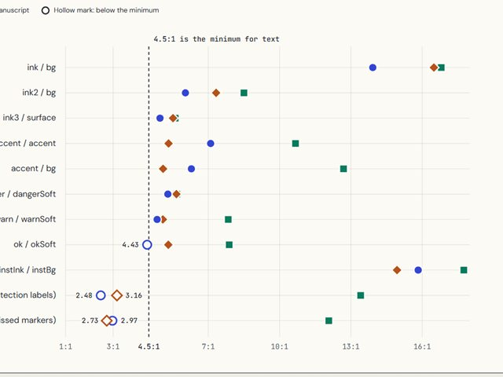
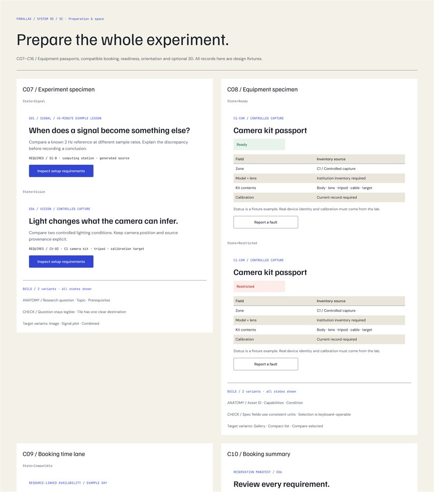
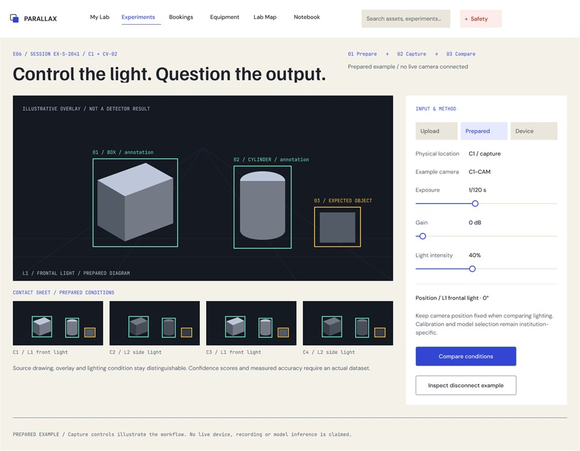
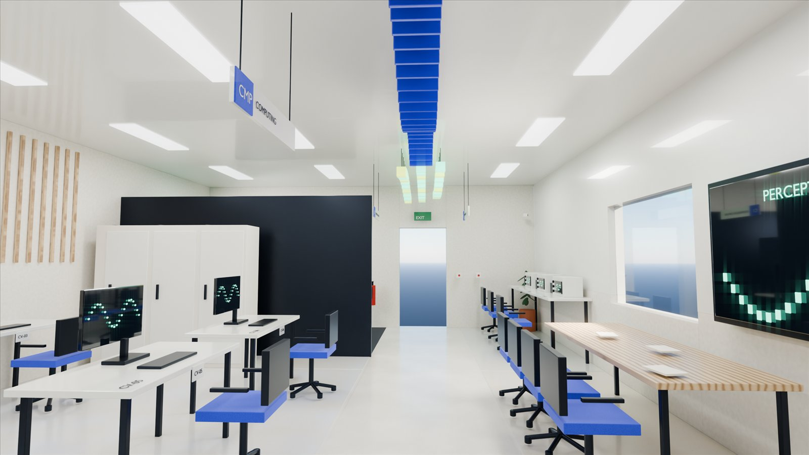
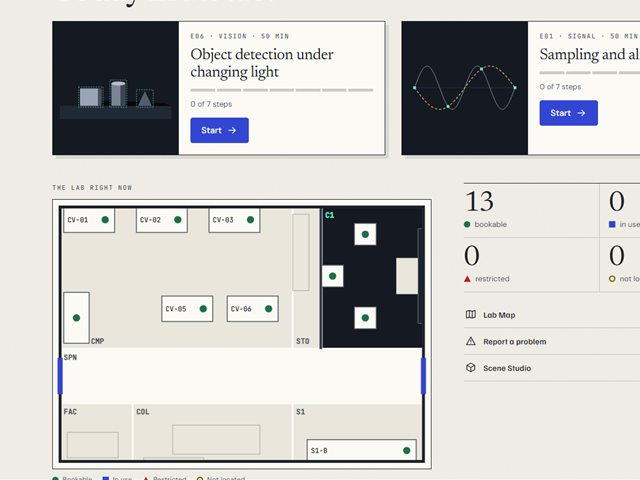

A living atlas of perception

The whole project, in order
One room, drawn twice: once in space, once on screen.
Parallax is the shift you see when you look at one thing from two positions. This project designs a small lab on that idea, and the software to book it, find it and use it.
Contents
Ten parts, one argument.
Open is an illustrated page. Read is a written record.
- 00
The blueprint
Read37 sections, 34 page families, 40 component contracts and the rules that keep claims honest.
- 01
Brief and scope
ReadWhat the assignment asks for, what is assumed, and which facts are still open.

02Research and experience
OpenTwelve hypotheses, six persona hypotheses, empathy and journey maps. Fieldwork has not started.

03Creative direction
OpenThree studies on identical content, measured and scored. Atlas+ was chosen.
 04
04Space and 3D
OpenA 10 × 7 m plan from one geometry file: six stations, a capture bay, a signal bench.

05Design system
OpenForty component patterns with working specimens and 87 Figma variants.

06The student’s journey
OpenTwenty-seven linked views from preparation to submission, with eight recovery paths.
 07
07The complete system
OpenTechnician, faculty, mobile and wall views, joined by one fault that crosses every role.

083D and interaction
OpenEleven renders, an orbit film and two working prototypes on the same room model.

09Prototype and verification
OpenA working demonstrator: reserve a kit, record evidence, report a fault and watch every view change.
The record
What has been checked, and what has not.
Each number below comes from a script in this folder that you can run again. None of them is a user test.
- 65/65scripted task checks pass for the demonstrator
- 25/25prototype and export checks pass for the 3D work
- 16geometric and export checks pass for the room
- 14colour pairs meet their contrast minimum
- 40component contracts, each with a specimen
An impressive render must never conceal an unresolved floor plan.
Still open
- The room is a 10 × 7 m modelling assumption, not a survey.
- No student, teacher or technician has tested any of it yet.
- Availability, occupancy and signals shown are prepared examples.
- Safety, electrical and access decisions need qualified local review.
- Equipment forms are illustrative, not manufacturer models.
- The participant test plan is written; no session has been run.